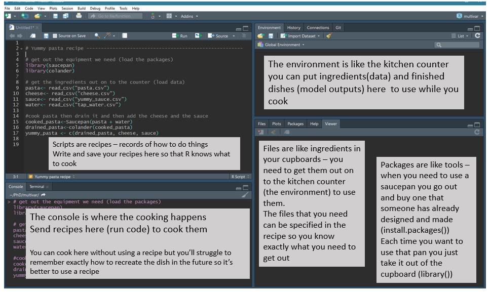
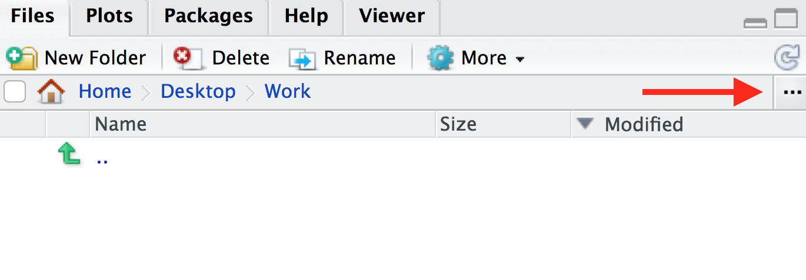
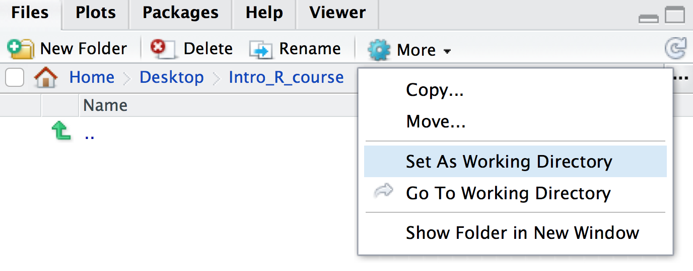

1 + 1[1] 2RStudio is an interface that makes it easier to use R. There are four windows in RStudio. The screenshot below shows an analogy linking the different RStudio windows to cooking.

There are two ways to work in RStudio in the console or in a script. We can type a command in the console and press Enter to run it. Try running the command below in the console.
1 + 1[1] 2Or we can use an R script. To create a script, from the top menu in RStudio: File > New File > R Script. Now type the command below in the script. This time, to run the command, you use Ctrl + Enter for Windows/Linux or Cmd + Enter for MacOS. This sends the command where the cursor is from the script to the console. You can highlight multiple commands and then press Cmd/Ctrl + Enter to run them one after the other.
2 + 2[1] 4As the RStudio screenshot above explains, if we work in the console we don’t have a good record (recipe) of what we’ve done. We can see commands we’ve run in the History panel (top right window), and we can go backwards and forwards through our history in the console using the up arrow and down arrow. But the history includes everything we’ve tried to run, including our mistakes so it is good practice to use an R script.
We can also add comments to a script. These are notes to ourself or others about the commands in the script. Comments start with a # which tells R not to run them as commands.
# testing R
2 + 2[1] 4Keeping an accurate record of how you’ve manipulated your data is important for reproducible research. Writing detailed comments and documenting your work are useful reminders to your future self (and anyone else reading your scripts) on what your code does.
Opening an RStudio session launches it from a specific location. This is the ‘working directory’. R looks in the working directory by default to read in data and save files. You can find out what the working directory is by using the command getwd(). This shows you the path to your working directory in the console. In Mac this is in the format /path/to/working/directory and in Windows C:\path\to\working\directory. It is often useful to have your data and R scripts in the same directory and set this as your working directory. We will do this now.
Make a folder for this course somewhere on your computer that you will be able to easily find. Name the folder for example, Intro_R_course. Then, to set this folder as your working directory:
In RStudio click on the ‘Files’ tab and then click on the three dots, as shown below.

In the window that appears, find the folder you created (e.g. Intro_R_course), click on it, then click ‘Open’. The files tab will now show the contents of your new folder. Click on More > Set As Working Directory, as shown below.

Save the script you created in the previous section as intro.R in this directory. You can do this by clicking on File > Save and the default location should be the current working directory (e.g. Intro_R_course).
Note: You can use an RStudio project as described here to automatically keep track of and set the working directory.
If it’s not already installed on your computer, you can use the install.packages function to install a package. A package is a collection of functions along with documentation, code, tests and example data.
install.packages("tidyverse")We will see many functions in this tutorial. Functions are “canned scripts” that automate more complicated sets of commands. Many functions are predefined, or can be made available by importing R packages. A function usually takes one or more inputs called arguments. Here tidyverse is the argument to the install.packages() function.
Note: functions require parentheses after the function name.
To see what any function in R does, type a ? before the name and help information will appear in the Help panel on the right in RStudio. Or you can search the function name in the Help panel search box. Google and Stack Overflow are also useful resources for getting help.
?install.packagesTab completion
A very useful feature is Tab completion. You can start typing and use Tab to autocomplete code, for example, a function name.
R error messages are common and can sometimes be cryptic. You most likely will encounter at least one error message during this tutorial. Some common reasons for errors are:
To see examples of some R error messages with explanations see here